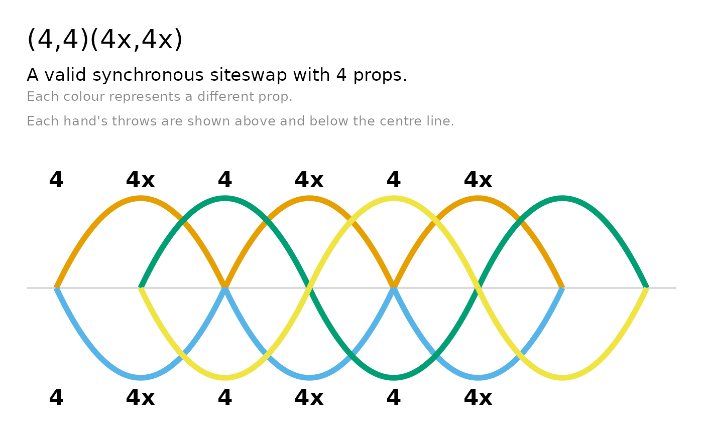
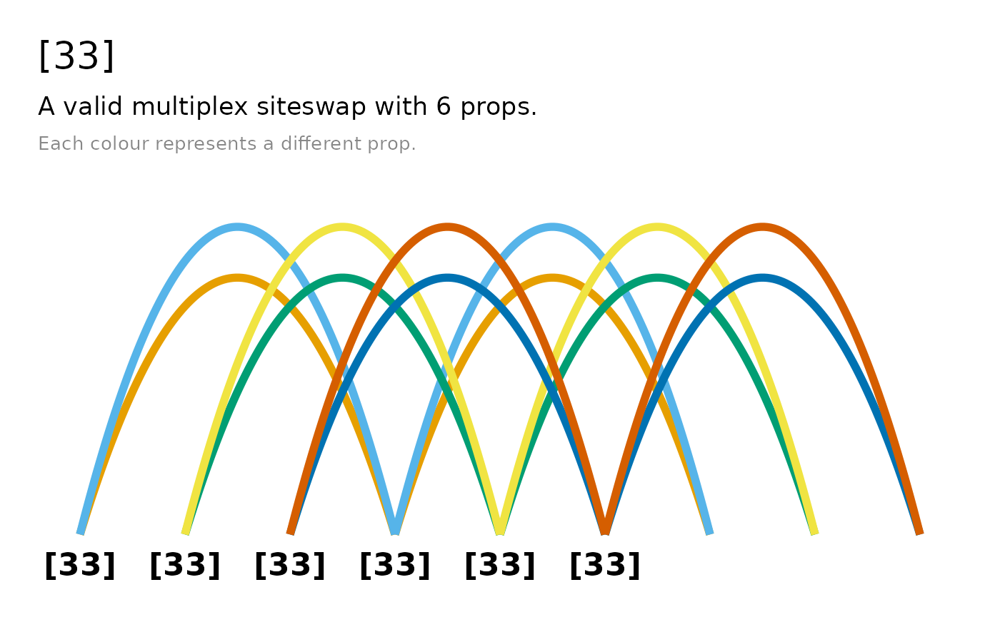
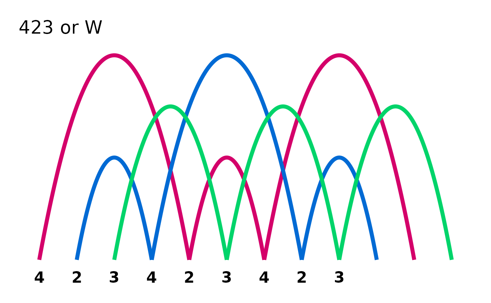
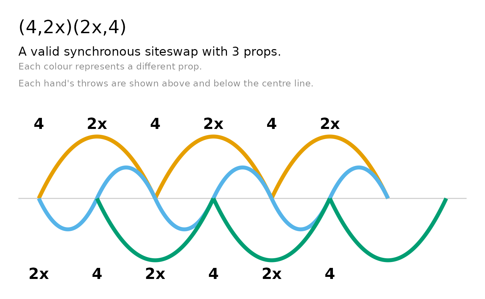
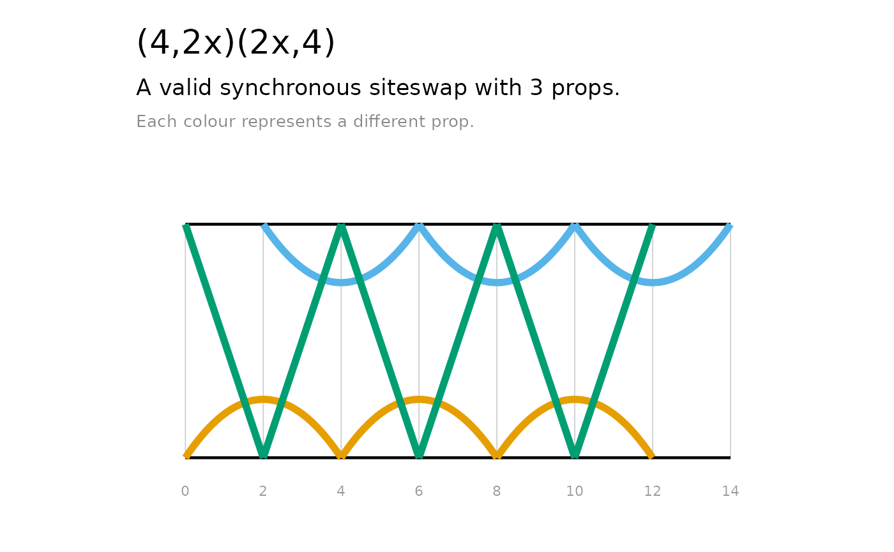
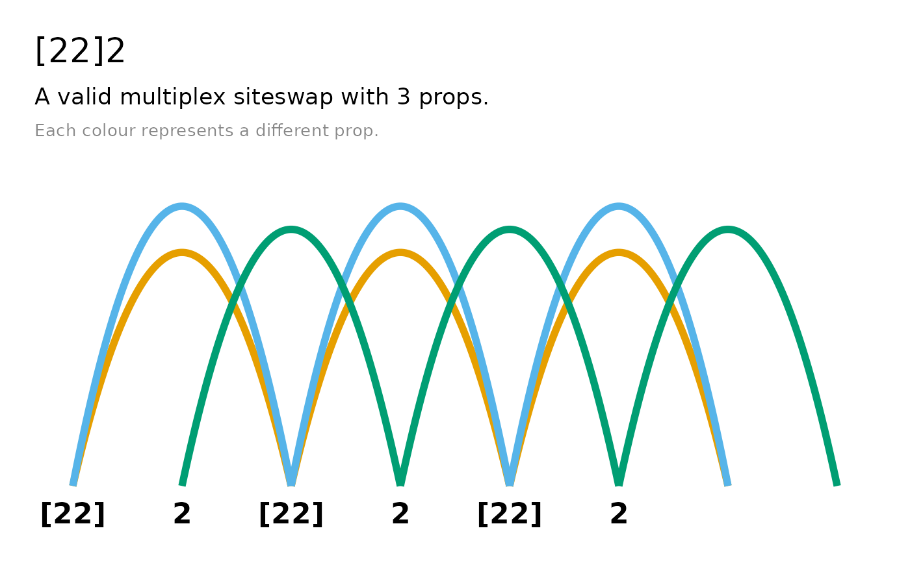
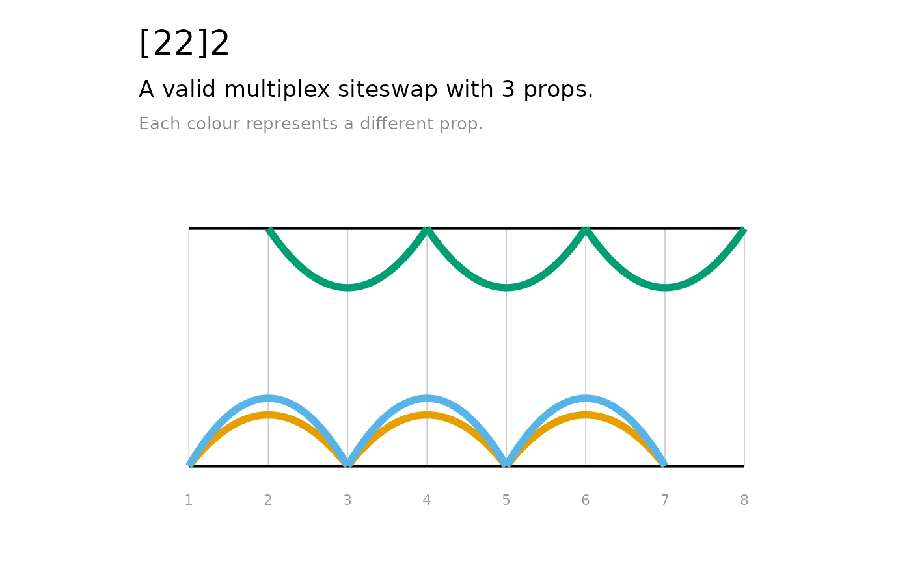

Introduction to siteswap notation
Juggling sequences can be written in a notation called siteswap. Each number in a siteswap sequence encodes how many beats until that prop is thrown again. The simplest form is vanilla siteswap: one prop thrown per beat, hands alternating.
A 3-ball cascade — the first sequence most jugglers learn — is written as “3”, where each ball is thrown the same height, caught in the opposite hand and thrown again three beats later. “531”, “423” and “441” are also valid 3-ball juggling patterns. A “4” is thrown and caught in the same hand, a “5” is similar to a “3” but thrown higher, a “2” is held in the hand for one beat, and a “1” is a quick pass to the other hand. However, not everything that can be written in siteswap is a valid, juggleable pattern. For example, in the sequence “432”, the first two props thrown would need to be caught in the same hand at the same time.
jugglr lets you create, validate, and visualise siteswap patterns in R.
There are several different types of siteswap, distinguished by their notation: vanilla, synchronous, multiplex, synchronous multiplex, and passing:
- vanilla:423
- synchronous (throwing a ball from each hand simultaneously): (4,4)(4x,4x), (4,2x)*
- multiplex (throwing multiple balls from the same hand simultaneously): [54]24
- synchronous multiplex: (2,6x)([6x4x],2x)
- passing (throwing between more than one juggler): <3p33|3p33> or <4.5 3 3 | 3 4 3.5>
See the Wikipedia article on siteswap for a more detailed introduction to each type and the notation.
Introduction to jugglr
In jugglr, you define a sequence with the function
siteswap(), which creates an S7 object with class
Siteswap as well as a child class corresponding to its
type: vanillaSiteswap, synchronousSiteswap,
multiplexSiteswap,
synchronousMultiplexSiteswap, or
passingSiteswap.
library(jugglr)
ss423 <- siteswap("423")
ss423
#> ✔ '423' is valid vanilla siteswap
#> ℹ It uses 3 props
#> ℹ It is symmetrical with period 3Note that siteswap() is a factory function. It parses
the sequence to determine the type of siteswap and calls the appropriate
constructor for that type, e.g. vanillaSiteswap(). Each of
these specific classes also has the abstract Siteswap class
as a parent.
Printing a Siteswap object shows the sequence and
whether it is a valid juggling pattern. For valid sequences, it also
reports the number of props the pattern requires, its period (how many
beats before it repeats), and whether it is symmetrical (i.e. whether
both hands do the same thing, just offset in time).
Patterns that cannot be juggled are still Siteswap
objects with the appropriate subclass. Their print method reports that
they are not valid juggling patterns.
For patterns that aren’t valid, it reports why not: either the sequence does not satisfy the average theorem (i.e. couldn’t be juggled with a whole number of props) or it has collisions.
ss432 <- siteswap("432")
ss432
#> ✖ '432' is not a valid juggling pattern
#> ℹ Two or more throws land on the same beat (collision)Visualising the patterns
timeline() and ladder() work across all
siteswap types, returning ggplot2 objects that can be further
customised. The path of each prop is shown in a different colour. Both
diagrams colour throws by prop using the colour-blind-friendly Okabe-Ito
palette (up to seven props, after which ggplot2’s default scale
takes over).
timeline() shows the throws and catches of each prop
over time, with a focus on the beat. It draws arcs: each arc represents
one throw, with height proportional to the throw value, colour-coded by
prop.
ladder() additionally shows which hand throws and
catches each prop. The ‘rails’ of the ladder represent the hands, with
straight lines between them representing throws caught in the opposite
hand, and arcs representing throws caught in the same hand.
throw_data() returns a data frame containing information
about each throw and catch, which can be used for custom
visualisations.
timeline(ss423)
ladder(ss423)
These plots are also useful for understanding why non-valid sequences are not jugglable. We can see, for example, where two props would need to be caught at the same time (which is not permissible in vanilla siteswap), or where props are “created” or “destroyed” (i.e. when the sequence demands that a prop should be thrown or caught, but there’s not a prop available to do so).
timeline(ss432)
ladder(ss432)
timeline() plots for synchronous patterns are drawn
two-sided: one hand’s arcs sit above a faint centre line and the other’s
below it.

Multiplex patterns in which a hand throws two props at once with the
same value are fanned apart so each prop is visible (which corresponds
to the way jugglers throw them in real life): By detault, timelines show
three cycles of the pattern, but you can increase this with the
n_cycles argument - this is recommended for patterns with
short cycles:

Both timeline() and ladder() have
title and subtitle arguments, which are
TRUE by default - the title shows the sequence and the
subtitle shows the validity and number of props, and explains that
colours represent props. If you prefer to set your own titles, set these
to FALSE and use ggplot2::labs() to add your
own. Since these plots return ggplot2 objects, they can be further
customised with any standard ggplot2 function:
library(ggplot2)
timeline(ss423, subtitle = FALSE) +
labs(title = "423 or W") +
scale_colour_manual(values = c("#D4006A", "#006AD4", "#00D46A"))
#> Scale for colour is already present.
#> Adding another scale for colour, which will replace the existing scale.
Synchronous patterns
Both diagrams adapt to each notation type. Because synchronous patterns throw from both hands at once, the timeline is drawn two-sided: one hand’s arcs sit above a faint centre line and the other’s mirror below it, each with its own throw labels.

The ladder follows suit, numbering only the even beats, since both hands throw together:
ladder(ss_sync)
Multiplex patterns
When a hand throws two identical props at once, their arcs would otherwise land on top of each other. Both diagrams fan such throws apart — to slightly different heights in the timeline, and into separate curves in the ladder — so each prop stays visible:

ladder(ss_mult)
Passing patterns
Both diagrams extend naturally to passing patterns, with one lane per juggler:

ladder(ss_pass)
Passes appear as arcs (or lines) that cross between the juggler lanes.
A few options
The n_cycles argument controls how many repetitions to
show — the default of 3 is usually enough to see the full structure, but
increase it to trace individual props further. ladder()
also accepts direction = "vertical" if you prefer that
orientation.
The raw data
If you want to build your own visualisation or work directly with the
numbers, throw_data() returns the underlying data
frame:
throw_data(ss423)
#> beat hand throw catch_beat catch_hand prop
#> 1 1 0 4 5 0 1
#> 2 2 1 2 4 1 2
#> 3 3 0 3 6 1 3
#> 4 4 1 4 8 1 2
#> 5 5 0 2 7 0 1
#> 6 6 1 3 9 0 3
#> 7 7 0 4 11 0 1
#> 8 8 1 2 10 1 2
#> 9 9 0 3 12 1 3One row per throw: when it was thrown, which hand, the throw value, when and where it lands, and which prop it belongs to. This is the same data that drives the diagrams.
Animation
jugglr can also produce animated GIFs of patterns via the JugglingLab server. Here’s
423 animated with three colours:

The animation article covers the full range of options: colour modes, prop types, speed controls, and how to save animations to disk for use in documents.